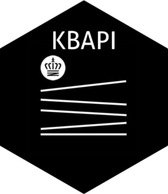

Søg luftfotos
get_aerial.RdEn kort beskrivelse af hvad funktionen gør.
Examples
# Eksempel på brug af funktionen
get_aerial(lat = 1, lon = 2)
#> # A tibble: 17 × 2
#> navn indhold
#> <chr> <list>
#> 1 Style <xml_node>
#> 2 startIndex <xml_node>
#> 3 itemsPerPage <xml_node>
#> 4 Query <xml_node>
#> 5 totalResults <xml_node>
#> 6 link <xml_node>
#> 7 link <xml_node>
#> 8 Placemark <xml_node>
#> 9 Placemark <xml_node>
#> 10 Placemark <xml_node>
#> 11 Placemark <xml_node>
#> 12 Placemark <xml_node>
#> 13 Placemark <xml_node>
#> 14 Placemark <xml_node>
#> 15 Placemark <xml_node>
#> 16 Placemark <xml_node>
#> 17 Placemark <xml_node>